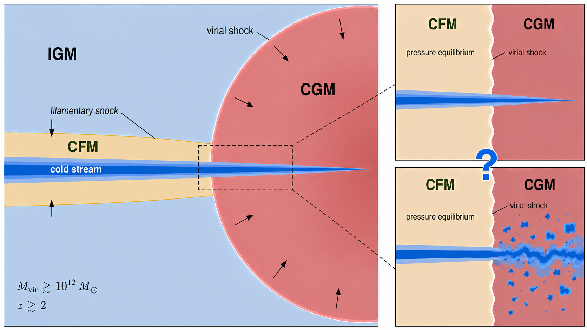
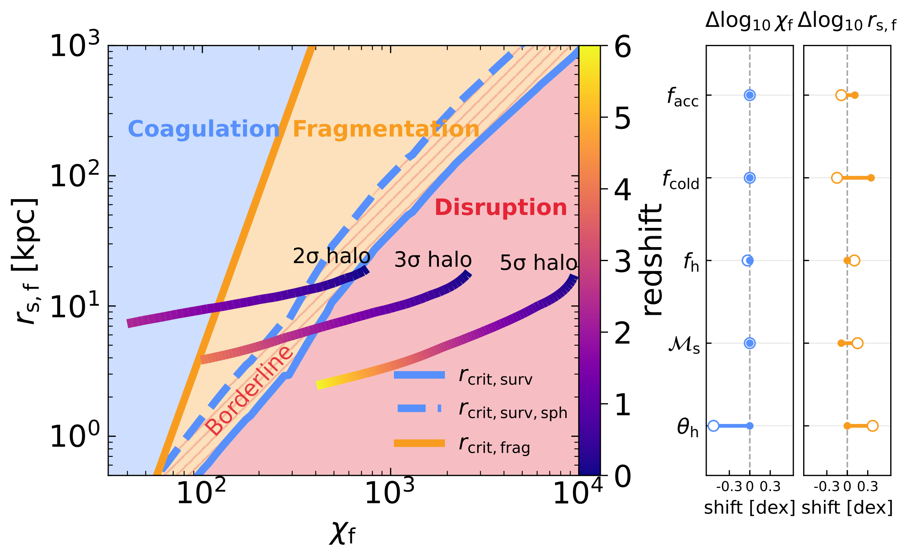
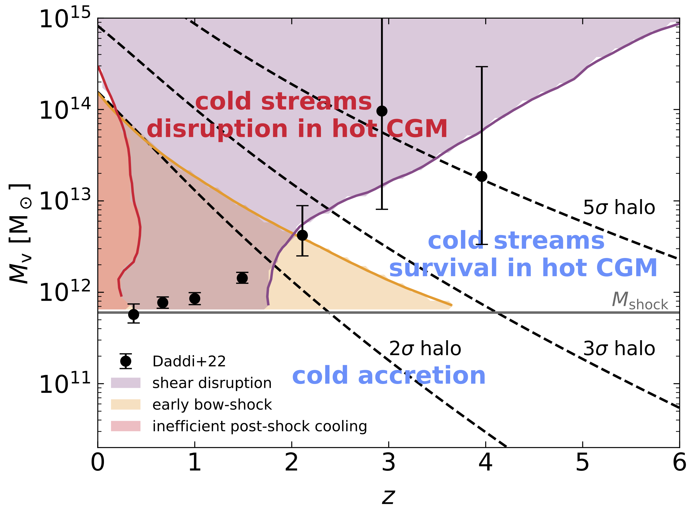

This page collects the simulation movies referenced in the paper above, on the penetration of cold streams through the virial shock of massive halos at high redshift. The movies are intended as a visual supplement to the paper; for the analytic theory, parameter scans, and detailed analysis, please see the paper itself.

Schematic of the two regimes — coagulation and fragmentation — encountered by a cold stream as it penetrates the virial shock of a massive halo. Reproduced from the paper.
What you are looking at
Each clip is from a 3D Eulerian AMR (RAMSES) simulation of a cold cylindrical stream injected through a hot, dilute, hydrostatic halo atmosphere at the virial radius. The stream interacts with a standing virial shock and either remains a coherent cold stream (“coagulation”), develops a quasi-steady shocked envelope that fragments into long-lived cloudlets (“fragmentation”), or is destroyed by Kelvin-Helmholtz Instability (KHI)/heating before it reaches the central galaxy (“disruption”). Four control parameters set the outcome — the post-shock stream radius rs,f, the cold-to-hot density contrast χf, the pressure contrast P, and the stream Mach number Ms.
Control parameters used in the movie names
rs,f
Final (post-shock) stream radius in kpc. Movie tag: R{r} (e.g. R1 = 1 kpc).
χf
Cold/hot density contrast in equilibrium with the CGM. Movie tag: D{χ} (e.g. D100 = χf = 100).
P
Pressure contrast between CGM and the cold-stream / CFM at injection. Movie tag: P{P}.
Ms
Stream Mach number relative to the CGM. Movie tag: M{M} (e.g. M1 = Ms = 1, M05 = 0.5).
L{level}
Maximum AMR refinement level for convergence-test runs.
The three fiducial runs for the paper are R1D50P7M1, R1D100P7M1, and R1D300P7M1. All of them have rs,f = 1 kpc, P = 7, Ms = 1, but with different density contrasts χf = 50, 100, 300.
4. Three regimes: coagulation, fragmentation, disruption
This section follows §4 of the paper. We sweep rs,f and χf at fixed P = 7 and Ms = 1 to bracket the three outcome regimes.
R0.1 D50 P7 M1
rs,f=0.1 kpc, χf=50, P=7, Ms=1Disr
Smallest, lowest-overdensity stream. Disrupted by the KHI before reaching the centre.
R0.2 D50 P7 M1
rs,f=0.2 kpc, χf=50, P=7, Ms=1Bord
Slightly larger stream under the same hot-halo conditions. Fragmented clumps are disrupted but the cold stream survives.
R1 D50 P7 M1
rs,f=1 kpc, χf=50, P=7, Ms=1Coag
A 1-kpc stream, coagulation case. Fragmented clumps merge back to the cold stream, strong entrainment.
R0.1 D100 P7 M1
rs,f=0.1 kpc, χf=100, P=7, Ms=1Disr
Higher χf does not save a sub-kpc stream from disruption.
R1 D100 P7 M1 (fiducial)
rs,f=1 kpc, χf=100, P=7, Ms=1Bord
The stream survives but its envelope clumps disrupt before reaching the centre.
R10 D100 P7 M1
rs,f=10 kpc, χf=100, P=7, Ms=1Coag
A wide, well-confined stream that stays coherent all the way through the halo — the coagulation regime.
R1 D300 P7 M1
rs,f=1 kpc, χf=300, P=7, Ms=1Disr
Increasing χf at fixed rs,f pushes the stream further into the disruption regime, despite long disruption timescale at high χf.
R10 D300 P7 M1
rs,f=10 kpc, χf=300, P=7, Ms=1Bord
The stream survives but its envelope clumps disrupt before reaching the centre.
R50 D300 P7 M1
rs,f=50 kpc, χf=300, P=7, Ms=1Frag
Largest stream in the suite, fragmented clump surive. Sustained, pervasive fragmentation, with numerous clumps distributed around the stream along its entire length.
5. Pressure contrast P
This section follows §5 of the paper. We vary the CGM/CFM pressure contrast P at fixed rs,f = 1 kpc and Ms = 1.
R1 D50 P1 M1
rs,f=1, χf=50, P=1, Ms=1Coag
Pressure-balanced injection at low χf. Cold stream survives.
R1 D50 P18 M1
rs,f=1, χf=50, P=18, Ms=1Coag
High pressure jump drives an early bow shock transition, yet the stream still survives with a even higher entrainment rate.
R1 D100 P1 M1
rs,f=1, χf=100, P=1, Ms=1Bord
Pressure-balanced borderline case.
R1 D100 P18 M1
rs,f=1, χf=100, P=18, Ms=1Bord
Strong over-pressure CGM triggers the bow shock transition, yet does not change the fate of the cold stream.
R1 D100 P30 M1
rs,f=1, χf=100, P=30, Ms=1Bord
Even stronger over-pressure: early bow shock transition just after the injection. Post-shock stream cools down eventually.
R1 D300 P1 M1
rs,f=1, χf=300, P=1, Ms=1Disr
Pressure-balanced, highest χf. Disruption regime.
R1 D300 P18 M1
rs,f=1, χf=300, P=18, Ms=1Disr
High pressure jump disrupts the cold stream faster.
6. Stream Mach number Ms
This section follows §6 of the paper. We vary the stream Mach number at fixed rs,f = 1 kpc and P = 7.
Super-sonic, low-χf stream is on the borderline between survival and disruption.
R1 D100 P7 M0.1
rs,f=1, χf=100, P=7, Ms=0.1Frag
Very sub-sonic stream, unsuccessful penetration. Back to the shattering study in the static setup.
R1 D100 P7 M0.5
rs,f=1, χf=100, P=7, Ms=0.5Frag
Sub-sonic, intermediate-χf case. Still in the fragmentation regime since the clumps are not disrupted by the shear.
R1 D100 P7 M2
rs,f=1, χf=100, P=7, Ms=2Disr
Super-sonic fiducial stream tips into disruption.
R1 D300 P7 M0.5
rs,f=1, χf=300, P=7, Ms=0.5Bord
Sub-sonic high-χf stream — boderline.
R1 D300 P7 M2
rs,f=1, χf=300, P=7, Ms=2Disr
Super-sonic high-χf stream — disrupted.
7. Application to galaxy evolution
This section follows §7 of the paper, where the per-run regimes above are folded into halo growth tracks to determine which halos a cold stream can actually reach. The two diagnostic figures below summarise the result.

Fig. 16 of the paper. The (rs,f, χf) regime diagram with halo evolutionary tracks for 2σ, 3σ and 5σ peaks colour-coded by redshift. Halos associated with 1𝜎 peaks typically reside within filaments and therefore are not expected to undergo the stream-penetration scenario considered here. In contrast, higher-𝜎 peak halos progressively transition from the coagulation regime to fragmentation, and eventually to disruption for 3𝜎 and higher peaks toward lower redshift. See the paper for details.

Fig. 17 of the paper. Cold-stream penetration as a function of halo virial mass Mv and redshift z. The orange curve marks the criterion for the early bow-shock transition; the red curve encloses the regime in which the post-shock cooling time exceeds the virial crossing time, implying that the shocked stream remains hot before reaching the central galaxy; the purple curves bracket the regime where streams survive shear-driven (KHI) disruption. See the paper for details.
Appendix. Convergence tests
From the convergence-test appendix of the paper, three fiducial-density runs at two extra resolutions (L10 and L12).